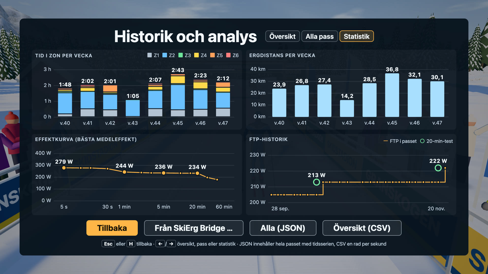

Gratis · öppen källkod · Mac och Windows
Längdskidåkning
i 3D på din SkiErg.
Skare gör varje pass på Concept2 SkiErg till en tur på skidspår: backar, kurvor, väder och motstånd som du känner i armarna.
Kommer snartInstallationsguide
01 · Åkupplevelsen
Spåret rullar under dig.
Sju banor i en och samma värld, från skidstadion genom granskogen och upp i hårnålskurvorna mot fjället. Åkaren stakar i din takt, kameran lutar in i kurvorna och snön virvlar upp från skidorna.
- Tid på dygnet och väder väljer du själv eller låter automatiken sköta
- Pass med flera intervaller, ghost och motståndare
- Allt ritas i din webbläsare eller skrivbordsappen, ingen konto behövs
02 · Bryggan till Zwift och SYSTM
Din effekt, i dina andra appar.
Skare läser effekt och takt från SkiErg och sänder dem vidare över Bluetooth som en effektmätare. Zwift eller Wahoo SYSTM hittar den som vilken mätare som helst, och pass från SYSTM kan du åka i 3D.
- Bluetooth från skrivbordsappen, USB till SkiErg
- Importera pass och följ målwatten i bild
- SkiErgdin träningsmaskin
- USB
- Datorkör Skare
- Bluetootheffektmätare
- iPad eller Zwifttar emot effekten
03 · Historik och analys
Se att du blir starkare.
Varje pass sparas på din dator. Tid i zon, distans, effektkurva och FTP över veckor och månader visas i klara diagram, och sammanfattningen efter passet visar varv, jämförelse och personliga rekord.
- Allt stannar lokalt hos dig
- Jämför mot förra passet eller din ghost
- Exportera när du vill

04 · Din data
Din historik är din.
Allt stannar hos dig
- Passen sparas lokalt på din dator, i appens egen lagring
- Inget konto och ingen molntjänst, och inget skickas någonstans
- Du kan exportera hela historiken som JSON när du vill
- Att radera allt direkt i appen är planerat; tills vidare försvinner datan när du rensar appens data
Exportera till andra träningsappar
- Varje pass kan exporteras som TCX, JSON eller CSV
- TCX-filer går att ladda upp för hand i många träningstjänster, till exempel Strava och Garmin Connect
- Export som FIT-fil är förberedd i koden men ännu inte kopplad till en knapp, och är planerad
- Direkt synk till träningstjänster är inte byggd. Den är planerad på sikt
05 · Ladda ned
Hämta Skare.
Kommer snart
Skrivbordsappen för Mac och Windows är på väg. Installationsguiden nedan gäller när den finns.
06 · Installationsguide
Appen är inte signerad ännu.
Därför varnar Mac och Windows första gången. Det är normalt, och så går du vidare:
- Öppna disk-avbilden och dra appen till Program.
- Starta appen. Säger macOS att den inte kan öppnas, öppna Systeminställningar → Integritet och säkerhet.
- Bläddra ned till meddelandet om appen och klicka Öppna ändå. Bekräfta med ditt lösenord.
- Säger macOS i stället att appen är skadad, kör detta i Terminal och starta om appen:
xattr -cr /Applications/Skare.app
- Kör den nedladdade installationsfilen.
- Visar Windows rutan Windows skyddade din dator (SmartScreen), klicka Mer information.
- Klicka Kör ändå och följ installationen.
07 · Gratis och öppen källkod
Alltid gratis. Alltid öppen.
Inga konton, ingen prenumeration, ingen spårning. Källkoden går att läsa, ändra och dela.
Licens
Programmet släpps under en öppen licens som anges i förrådet. Grafik och ljud vi använder har licenser som CC0, CC BY och MIT.
Erkännanden
Tack till three.js, React, Poly Haven, ambientCG, Quaternius, Kenney och KayKit. Hela listan med upphovspersoner finns i ATTRIBUTIONS.md.
Varumärken
Concept2, SkiErg, Zwift och Wahoo tillhör sina ägare. Skare är ett oberoende projekt. Zwift och Wahoo nämns i texten bara för att visa vad som fungerar ihop.